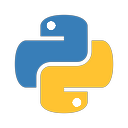

Python

Python은 매우 많은 사용자를 보유한 언어이며, 따라서 이미 작성되어진 코드를 유지보수하기 가장 쉬운 언어 중 하나입니다.
대부분의 OS에서 동작하며, 대규모 프로젝트의 개발에도 자주 이용됩니다.
다양한 기능의 라이브러리가 풍부하며, 파이썬에서 사용되는 Django, Flask, NumPy, Matplotlib, TenserFlow 등의 많은 프레임워크와 라이브러리가 제공됩니다.
동적 타이핑 지원을 통해 타입 검사를 실행 시점에서 수행하며, 문법이 상대적으로 간단하고 직관적입니다.
다른 언어에 비해 실행 속도가 비교적 느릴 수 있다는 단점이 있지만, 최근에는 Just-in-time(JIT) 컴파일러 등을 사용하여 성능을 향상시키는 프로젝트도 진행중입니다.
해당 그래프는 공식적인 자료가 아닙니다. 단순 참고용으로만 사용해주시길 바랍니다.
정적/동적 타이핑의 경우 음수일 경우 동적 타이핑, 양수일 경우 정적 타이핑을 지원하는 지표로 나타내었습니다.
Python이 사용된 소프트웨어:
- Youtube를 포함한 다양한 구글 기반 애플리케이션의 백엔드
- TenserFlow, PyTorch와 같은 AI 관련 라이브러리
- Flask 및 Django
- Spotify의 백엔드
- Sid Meier's Civilization IV
Python 공식 웹 사이트로 바로가기
설명: 위 코드는 Python으로 작성된 기본 "Hello, World!"를 출력하는 코드입니다.
프로그래밍 언어 추천 테스트로 돌아가기